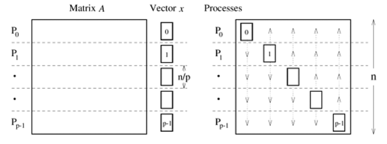
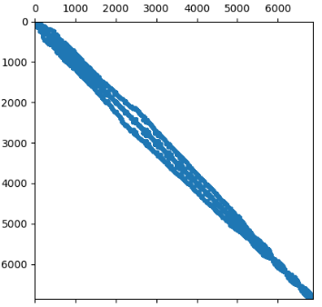
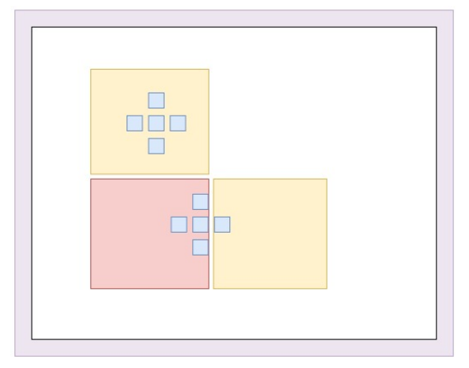
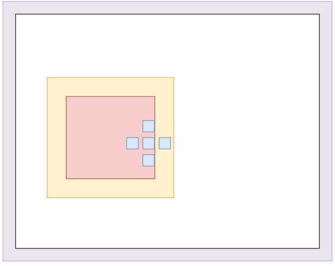
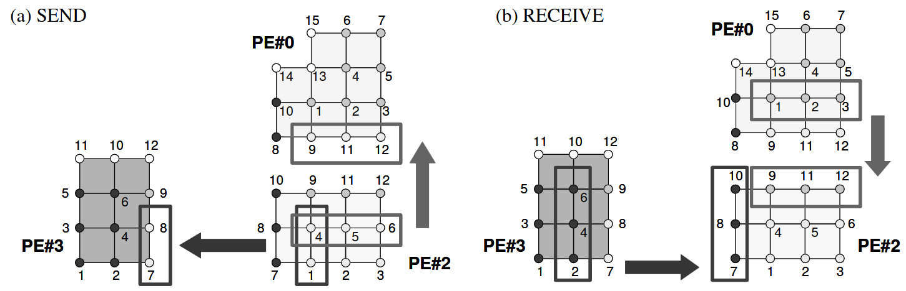

20261112 - Parallel Distribution¶
What does this mean? (Copied from distributed memory parallelism notes)¶
We should reduce the total amount of communications necessary (not necessarily require less data communicated)
Choose algorithms that are communication avoiding
Remove any unnecessary communications, particularly in “hot loops”
We should “hide” the latency if we can
Overlap communication with other useful work
Computing while communicating
Batching communication together (where it makes sense)
Advice from Bill Gropp (father of MPI)¶
You want to think about how you decompose your data structures, how you think about them globally. […] If you were building a house, you’d start with a set of blueprints that give you a picture of what the whole house looks like. You wouldn’t start with a bunch of tiles and say. “Well I’ll put this tile down on the ground, and then I’ll find a tile to go next to it.” But all too many people try to build their parallel programs by creating the smallest possible tiles and then trying to have the structure of their code emerge from the chaos of all these little pieces. You have to have an organizing principle if you’re going to survive making your code parallel. – https://www.rce-cast.com/Podcast/rce-28-mpich2.html
Distributed-memory parallelism lives and dies by how you distribute the memory (duh)
Often needs to be done at an architectural level
Can’t really start piece-by-piece
Difficult to take a shared memory code and make an optimal MPI/distributed memory program without significant modifications
How do we want to distribute our problem across multiple ranks?¶
Two goals:
Distribute the total computation evenly across processors
We’re only as fast as the slowest process
Minimize communication as much as possible
Both in number of communciation and amount of data to be communicated
Simplest example: Sparse matrix-vector multiply¶
Say we have a (sparse) matrix that we want to have distributed across ranks.
How should we distribute the matrix?
How should we distribute the vector?
Easiest way is to parallelize by
Assigning rows of the vector and matrix to each rank
Each rank holds the matrix entries for those rows

See step-by-step workout of how the mat-vec product happens
![image.png]()
from Verification Challenges in Sparse Matrix Vector Multiplication in High Performance Computing: Part I
Example matrix¶

from RCM++:Reverse Cuthill-McKee ordering with Bi-Criteria Node Finder
First few ranks recieve small (contiguous) portion of the vector
Probably only has to communicate with one rank
Very possibly doesn’t have to communciate with any ranks at all (vector entries are collocated with matrix entries)
Next few ranks recieve many different small portions from different areas of the vector
Requires recieving communication from many different ranks
The amount of data which needs to be transfered is dependent on the layout of the matrix
How do we fix this?
Just reorder the matrix entries
If we apply a permutation to the rows and columns of the matrix, and to the vector, the result is identical
One reordering method is to use the CutHill-McKee algorithm
Reduces the “bandwidth” of the matrix
e.g. the maximum “distance” between non-zero entries of a row
from RCM++:Reverse Cuthill-McKee ordering with Bi-Criteria Node Finder
Another way to reorder to use graph-based partitioners
Examples are ParMeTiS, PTSCOTCH, or Chaco
These interpret the non-zero pattern of the matrix as a graph via an adjacency matrix
The graph is then split into subsets of nodes, while trying to minimize edge cuts
Edges can be weighted favor some edge cuts over others
For matrices, mostly interesting for parallel preconditioning performance (e.g. performance of additive Schwartz methods)
Graph partitioning usually better than “naive” Cuthill-McKee application
It tries to directly solve the problem
But the problem to be solved isn’t possible to solve exactly
Literally NP-complete problem
Physical domain partitioning (domain decomposition)¶
For many scientific problems, governed by partial differential equations (PDEs)
Defined on a domain, which is then discretized (split into finite parts)
How we split these apart matters
Example: finite different, 5 point stencil¶
Take domain (large rectangle) and discretize evenly into rows and columns of points
We partition those points into small blocks
Each parallel process “holds” one partition

To compute the stencil, we need the points to the left, right, top, and bottom of each point we have
At the edge, these needed points are owned by other processes
So we need to communicate them somehow
On each rank, we create a “halo” ring of points we need, but we do not own
Sometimes also called ghost cells, rind, or shared points
These halo points them must be communicated around

More detailed example:¶
Same example as before, just more noisy (but more realistic)

from Parallel Iterative Solvers of GeoFEM with Selective Blocking Preconditioning for Nonlinear Contact Problems on the Earth Simulator* by Kengo Nakajima*
from Parallel Iterative Solvers of GeoFEM with Selective Blocking Preconditioning for Nonlinear Contact Problems on the Earth Simulator* by Kengo Nakajima*
How do we split the domain?¶
What we do we want in our partitioning?
This can sometimes change depending on what problem you’re doing, what algorithms you use, etc.
Generally:
Give each rank approximately the same amount of “owned” data (analgous to how much work each rank does)
Reduce the communication between them
The physical way of thinking about this is to evenly distribute volume, while minimizing surface area for each rank
Volume kinda equals the total amount of points in a partition
Surface area kinda means the amount of communication that needs to be done
The partitions, physically, should look “ball-like”
Obviously not possible for every partition, otherwise there would be gaps (see packing factor)
Again, we use graph partitioners to do this
Graph describes the connectivity between each point
Graph partitioner creates even subsets (partitions) while minimizing edge cut of the graph
Example partitioners: ParMETIS, PTSCOTCH, etc.
Matrices based on Physical Domain¶
If we want to create a matrix based on the physical domain discretization, do we need to do more partitioning?
Not really…
The graph used for domain partitioning is usually heavily related (if not identical) to the graph used for matrix partitioning
We normally just use the row or column -based matrix partitioning method after that
Hierarchical Partitioning¶
As previously discussed, not all communication is equal
Intra NUMA \(\neq\) inter NUMA \(\neq\) inter compute node \(\neq\) inter-rack (networking)
Thus, for partitioning work, some edge cuts are not the same as others
We want to minimize edge cuts between nodes more than we want to minimize overall
Can’t use the normal edge weights of graph partitioners
These weights are about the graph itself
We care about the partitions
Solution is hierarchical partitioning
Split matrix/domain into partitions, one for each compute node
Then split those compute node partitions
Example: If we have 6 compute nodes, with 12 cores each, then
Partition into 6 chunks
This minimizes the communication cuts between nodes
Partition each of the 6 chunks into 12 sub-chunks
This minimizes the communication within each node
Can do this on higher levels too
Partition for each rack, then each node, then individual cores
Important for multi-GPU too
Recall the communication networks on the same node between GPUs

From Zoltan guide
[ ]: